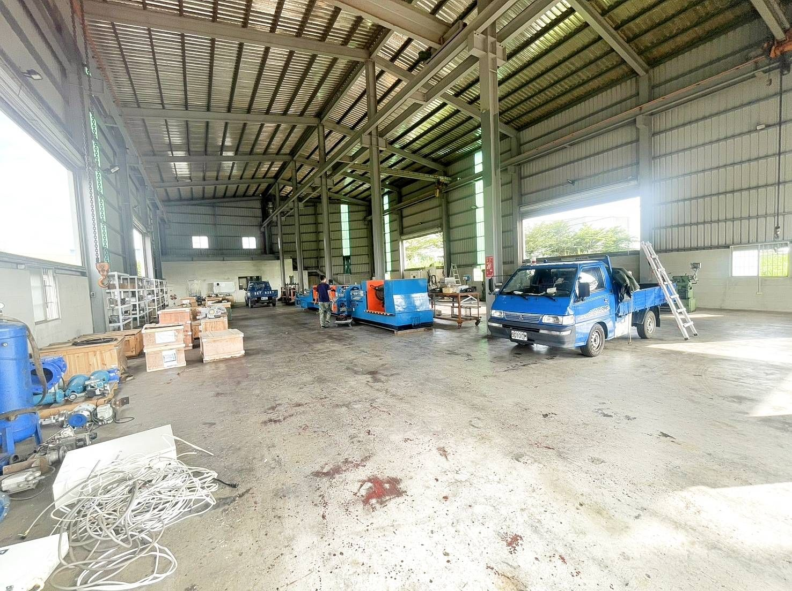
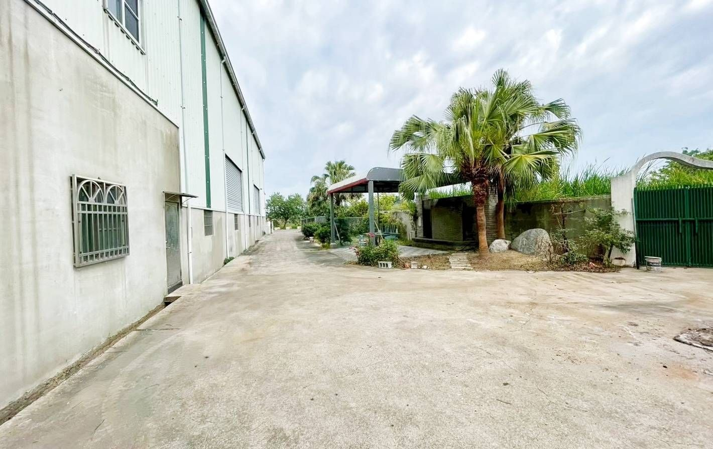
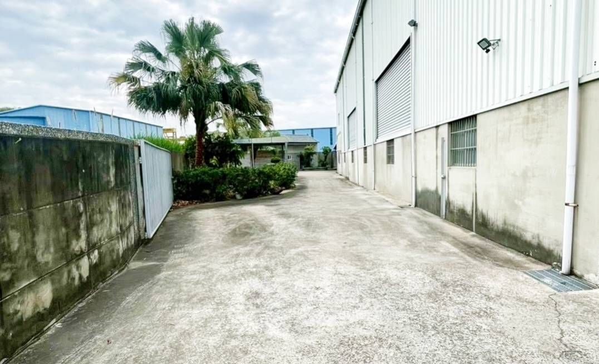

| 類別 | 小型廠房 |
|---|---|
| 編號 | IND-008 |
| 區域 | 高雄市岡山區阿公店路三段 |
| 價格 | 5860萬（每地坪約14.4萬） |
| 使用分區 | 一般農業區/農牧用地 |
| 土地坪數 | 407 |
| 建物坪數 | 34 |
| 備註 | 面寬約23米、深度約34米、臨路阿公店路三段(10米)、天車、涼亭、會議室、有租約5年(至2030年8月，前2年10萬/月，後3年11萬/月) |
洽詢：楊紘珉（富住通商用不動產 新興店）0905-858-141｜LINE 諮詢
相關物件：岡山區廠房